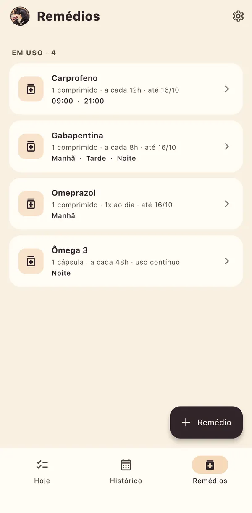
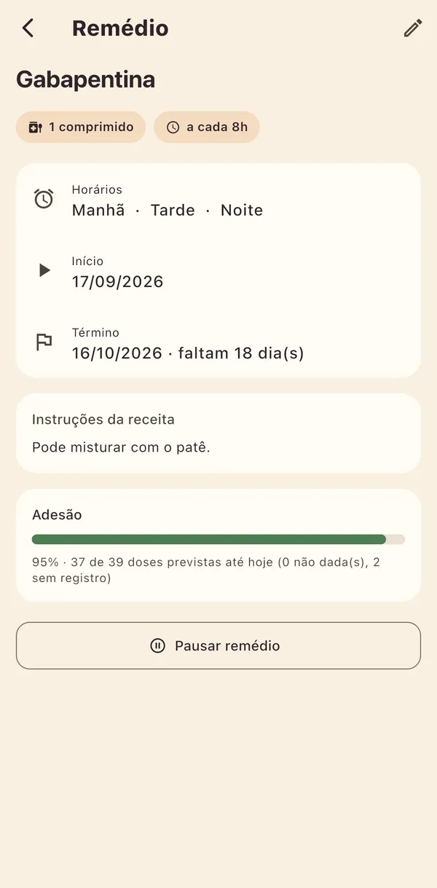
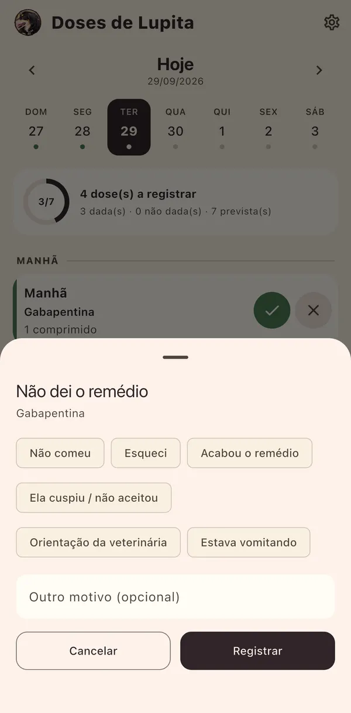

As doses do dia, uma por uma
Manhã, tarde e noite em ordem. Cada dose é um toque: dei, não dei — com o motivo — ou dei fora do horário.
Para iPhone e Android
Lupita responde em um toque: a agenda do dia de cada animal em tratamento, dose por dose, e o histórico do mês inteiro.
Manhã, tarde e noite em ordem. Cada dose é um toque: dei, não dei — com o motivo — ou dei fora do horário.
Fotografe a receita e os remédios são lidos no próprio aparelho. Você confere cada um antes de cadastrar.
A cada 8, 12 ou 48 horas, de manhã e à noite, por sete dias ou de uso contínuo — sem fazer conta.
O calendário mostra como foi cada dia, e cada remédio diz quanto do tratamento foi dado.
Cada animal com os próprios remédios, horários e histórico. A troca fica no rosto, no alto da tela.
Tudo o que você anota fica salvo no aparelho. Dá para usar no consultório, no sítio ou no avião.



Um aviso que importa. Lupita organiza e lembra: não receita, não calcula dose e não substitui o veterinário. Não é um dispositivo médico e não diagnostica nem trata doença alguma — na dúvida, fale com quem atende o seu animal.